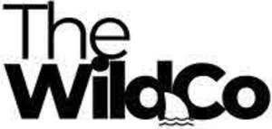
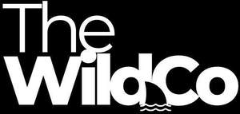

Trade Mark Journal No.2025/017 25 April 2025
UK00004187928 11 April 2025 (16,41)
Mark 1

Mark 2

TheWildCo is all one word, not two or three. It has many branches that do fitness, training, events & art.
- Class 16
- Art prints; Art etchings; Graphic art reproductions; Graphic art prints; Art pictures; Art paper; Lithographic works of art; Graphic art books; Works of art of paper; Fine art prints; Art mounts; Photographic or art mounts; Decoration and art materials and media; Printed art reproductions; Works of art made of paper; Colored craft and art sand; Adhesives for art use; 3D wall art made of paper; Arts, crafts and modelling equipment; Works of art and figurines of paper and cardboard, and architects' models; Paper for use in the graphic arts industry; 3D wall art made of card; Arts and crafts paint kits; Arts and craft paint kits; Papers for use in the graphic arts industry; Painting sets for artists.
- Class 41
- Health and fitness training; Sports and fitness; Exercise and fitness classes; Health club [fitness] services; Health and fitness club services; Exercise [fitness] training services; Fitness and exercise training services; Fitness and exercise instruction; Health club services [health and fitness training]; Fitness club services; Physical fitness consultation; Physical fitness centres; Physical fitness instruction; Sports and fitness services; Physical fitness training services; Fitness training services; Tuition in physical fitness; Physical fitness tuition; Personal fitness training services; Personal trainer services [fitness training]; Providing fitness and exercise facilities; Physical fitness centre services; Exercise [fitness] advisory services; Conducting physical fitness conditioning classes; Physical fitness education services; Health and wellness training; Consultancy relating to physical fitness training; Health club services [exercise]; Training services relating to fitness; Conducting fitness classes; Physical fitness assessment services for training purposes; Education services relating to physical fitness; Educational services relating to physical fitness; Provision of educational health and fitness information; Instruction courses relating to physical fitness; Physical fitness instruction for adults and children; Conducting training sessions on physical fitness online; Gym activity classes; Training in yoga; Health club services; Aerobic and dance facilities; Sports training; Training in sports; Physical health education; Rental of sports or exercise equipment; Providing health club and gymnasium services; Provision of educational services relating to fitness; Training related to nutrition; Exercise classes; Supervision of physical exercise; Gymnasium services relating to weight training; Providing of training in the field of health care and nutrition; Physical training services; Strength and conditioning training; Personal coaching [training]; Life coaching (training); Training services relating to health and safety; Recreation and training services; Education and training in the field of occupational health and safety; Providing instruction and equipment in the field of physical exercise; Sports club services; Personal trainer services; Training of sports players; Training; Coaching [training]; Training and further training consultancy; Education and training; Training courses; Training and instruction; Personnel training; Training consultancy; Training services; Education and training consultancy; Organisation of training courses; Organisation of training seminars; Organisation of training; Advanced training; Practical training; Education, teaching and training; Training of teachers; Providing of training; Providing training; Providing courses of training; Conducting training seminars; Provision of training courses; Training courses (Provision of -); Provision of training; Instructional and training services; Business training; Continuous training; Conducting workshops [training]; Training and education services; Education and training services; Arranging of training courses; Adult training; Teacher training services; Workshops for training purposes; Residential training courses; Provision of training and education; Provision of education and training; Training services for personnel; Practical training services; Instruction in circuit training; Educational and training services; Arranging professional workshop and training courses; Training of swimming teachers; Courses (Training -) relating to management; Management training services; Staff training services; Arrangement of training courses in teaching institutes; Providing online training seminars; Personal development training; Conducting training seminars for clients; Training of sports teachers; Providing of continuous training courses; Provision of training courses in personal development; Providing of training, teaching and tuition; Organisation of seminars relating to training; Training (Practical -) [demonstration]; Practical training [demonstration]; Aerial fitness instruction; Physical fitness centres (Operation of -); Provision of health club [physical exercise] facilities; Aerobics training services; Aerobics competitions; Entertainment in the nature of weight lifting competitions; Providing obstacle course training gym facilities; Training services relating to occupational health; Education and training services in the field of occupational health and safety; Entertainment services in the nature of a wrestling club; Organising of sporting events; Organising sporting events; Dance events; Organising of sports events; Organization of sporting events; Organization of sporting events and competitions; Arranging of sporting events; Organisation of sporting events; Organisation of sporting events and competitions; Organising of sports competitions and events; Production of sporting events; Organisation of entertainment events; Organising of recreational events; Organising community sporting events; Provision of sporting events; Organization of entertainment events; Arranging of cultural events; Organisation of cultural events; Publication of calendars of events; Conducting of sports events; Organising gymnastics events; Gymnastics events (Organising of -); Organization of dancing events; Organization of sporting events and competitions, involving animals; Organising of sporting events, competitions and sporting tournaments; Management of events for sporting clubs; Organising of football events; Conducting of cultural events; Organising dancing events; Organisation of esports events; Conducting of entertainment events; Organisation of musical events; Organisation of sporting competitions and sports events; Organising community cultural events; Organisation of cycling events; Organising events for cultural purposes; Organizing community sporting and cultural events; Production of esports events; Ticket information services for sporting events; Organising events for entertainment purposes; Organisation of entertainment and cultural events; Services for the organisation of sports events; Organisation of educational events; Entertainment provided during intervals of sporting events; Organization of cosplay entertainment events; Arranging of educational events; Entertainment services relating to sporting events; Organisation of automobile rallies, tours and racing events; Organising of sports competitions and sports events; Organising of sports events and of sports competitions; Conducting of live sports events; Entertainment services in the nature of sporting events; Organizing cultural and arts events; Organising of sports and sports events; Presentation of live entertainment events; Booking of sports personalities for events (services of a promoter); Production of sporting events for radio; Provision and management of sporting events; Production of sporting events for television; Musical events (Arranging of -); Arranging of musical events; Organization of events for cultural purposes; Ticket information services for esports events; Conducting of educational events; Production of sporting events for film; Services for the organisation of football events; Booking of seats for shows and sports events; Conducting of live esports events; Organisation of events for cultural, entertainment and sporting purposes; Conducting of live entertainment events; Entertainment services in the nature of skating events; Provision of recreational events; Provision of information relating to sporting events; Ticket procurement services for sporting events; Master of ceremony services for parties and special events; Providing facilities for sports events; Production of live entertainment events; Rental of equipment for use at sporting events; Ticket information services for entertainment events; Arranging and conducting of sports events; Entertainment services provided during intervals at sports events; Sporting event organization; Advisory services relating to the organisation of sporting events; Production of esports events for television; Arranging for ticket reservations for shows and other entertainment events; Disc jockeys for parties and special events; Booking of seats for entertainment events; Providing facilities for sporting events, sports and athletic competitions and awards programmes; Disc jockey services for parties and special events; Arranging and conducting of entertainment events; Ticket reservation for cultural events; Entertainment services in the nature of organizing social entertainment events; Organising of sporting activities and competitions; Organising of sporting activities or competitions; Arranging and conducting of live entertainment events; Video editing services for events; Ticket procurement services for entertainment events; Preparing subtitles for live theatrical events; Providing will-call ticket services for entertainment, sporting and cultural events; Arranging and conducting of sports events for charitable purposes; Organisation of sports events in the field of football; Organising of sporting activities and of sporting competitions; Rental of equipment for use at athletic events; Entertainment services in the nature of arranging social entertainment events; Organisation of sporting activities and competitions; Booking of performing artists for events (services of a promoter).
Lorah Wild